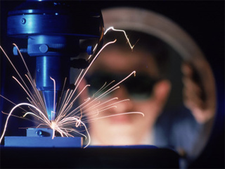

Лазерная пайка позволяет проводить сложный ремонт ювелирных изделий. К примеру, лазерная сварка, проводимая на пустотелых цепочках, дает возможность аккуратно и без деформации (или риска сплавить все изделие) произвести работу.
Если сравнивать новейшую лазерную и ранее востребованную пайку, то несомненное преимущество на стороне первого. Лазерная сварка дает возможность проводить работу максимально аккуратно. В некоторых случаях место припоя ювелирных изделий невозможно определить даже при пристальном рассматривании под увеличительным стеклом.
Скорость и качество ремонта золота, серебра или других драгоценных металлов, с использованием лазерной пайки, гораздо выше, чем при использовании горелки. Кроме того, специалистам, использующим новейшие технологии, не потребуются флюсы и лишняя обработка поверхностей.
Лазерная сварка производится именно в том месте, где находится разрыв цепочки, в процессе работы нет лишнего нагрева, а также мастера не спаивают соседние звенья.
Наша ювелирная мастерская предлагает вашему вниманию увеличение или уменьшение колец с использованием лазерной методики. Данная технология позволяет проводить работу без выкрепки камней, в связи с тем, что лазерная сварка воздействует на предмет локально, без его нагрева по всей поверхности. Для сравнения: при использовании горелки, происходит нагрев всего изделия, в том числе и драгоценных камней. В этом случае велика вероятность испортить не только само изделие, но и камни.
Лазерная пайка позволяет проводить не только аккуратную работу с ювелирными изделиями, но и качественный, долговечный ремонт очков. Если ваши любимые, удобные очки требуют срочного и аккуратного восстановления, то обращайтесь за помощью к специалистам нашей компании. Мы быстро и недорого восстановим вашу оправу.
Мы работаем в Киеве. Цена, установленная на наши услуги, вас приятно порадует, а высокое качество работы станет причиной того, что вы обратитесь к нам в следующий раз.